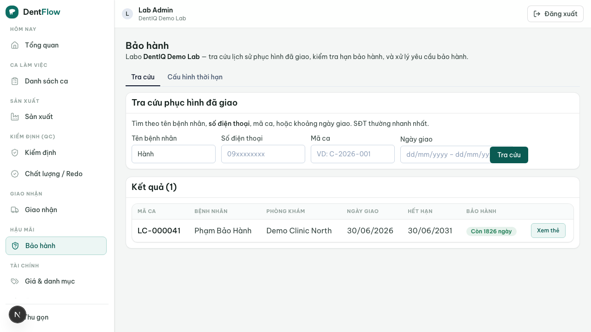

Yêu cầu bảo hành
Một phục hình đã giao bị hỏng và bệnh nhân quay lại phòng khám. Thay vì lục sổ/Excel/Zalo để đoán vật liệu và ngày giao, labo tra cứu nhanh lịch sử case đã giao — bằng tên bệnh nhân, số điện thoại, mã case hoặc khoảng ngày giao — để biết còn hay hết hạn bảo hành, xem nguồn gốc phôi (material provenance) gắn trên case và điều khoản coverage. Còn hạn + đủ điều kiện thì tạo claim, đưa case quay lại sản xuất để sửa hoặc làm lại đúng công đoạn.

Bối cảnh
Một mão zirconia răng 46 giao cách đây 8 tháng bị nứt cạnh. Bệnh nhân quay lại; lễ tân phòng khám nhớ số điện thoại khách chứ không nhớ mã case. Nha sĩ báo bảo hành kèm ảnh vết nứt. Điều phối labo mở case, tra theo SĐT, thấy case ở trạng thái delivered, dòng zirconia phổ thông có cam kết 5 năm → còn hạn. Màn bảo hành hiển thị thẻ bảo hành điện tử và khối nguồn gốc phôi (nhà sản xuất, dòng/số lô, ai chỉ định). Đủ điều kiện → tạo claim, ghi lý do + đính ảnh, duyệt để đưa case về sản xuất làm lại.
Diễn viên & quyền cần
| Vai trò | Quyền/điều kiện | Hành động |
|---|---|---|
| Nha sĩ / lễ tân (clinic) | Trên case của chính phòng khám | Báo phục hình hỏng, gửi yêu cầu bảo hành kèm ảnh |
| Chủ labo / điều phối (lab) | Vai quản lý; labo sở hữu case | Tra cứu lịch sử, kiểm tra hạn, xem provenance, duyệt và tạo claim |
| Kế toán (lab) | Vai tài chính | Đối chiếu claim với chi phí làm lại, xác định bên chịu trách nhiệm |
| Technician (lab) | Được phân case | Làm lại đúng công đoạn cần sửa rồi đẩy lên QC lại |
Quy trình từng bước
- Tra cứu case đã giao. Nhập một trong 4 khóa — tên bệnh nhân, SĐT, mã case, hoặc khoảng ngày giao. SĐT là khóa thực dụng nhất ở VN. Kết quả ra ngay, mỗi dòng có chip trạng thái bảo hành (BR-03).
- Kiểm tra hạn bảo hành. Hạn tính theo cặp material × loại unit, mốc bắt đầu là ngày giao; hết hạn = ngày giao + thời hạn của dòng vật liệu đó (2–15 năm tùy dòng) (BR-01, BR-02).
- Xem thẻ bảo hành điện tử + nguồn gốc phôi. Tab "Bảo hành" hiển thị thẻ điện tử suy ra từ case (bệnh nhân, unit, material, ngày giao, ngày hết hạn, mã tra cứu) và khối provenance gắn trên case (BR-09, BR-10). Case cũ thiếu provenance → đánh dấu "thiếu nguồn gốc", không bịa.
- Tạo claim. Chỉ tạo được khi case đang ở
deliveredvà còn trong hạn. Bắt buộc ghi lý do hỏng + ≥1 ảnh bằng chứng. Case chuyểndelivered → warranty(BR-04, BR-05). - Duyệt claim + ghi bên chịu trách nhiệm. Khi duyệt phải ghi bên chịu trách nhiệm (labo / clinic / hao mòn tự nhiên). Duyệt sửa →
warranty → in_productionđúng công đoạn; từ chối (ngoài phạm vi) →warranty → closedkèm lý do (BR-05, BR-06). - Làm lại + QC lại. Technician làm lại đúng công đoạn được chỉ, không làm lại từ đầu; xong đưa qua QC như case bình thường trước khi giao lại.
Kết quả mong đợi
- Tra cứu case cũ trong vài giây bằng một ô nhập — thay cho lục sổ/Zalo.
- Trạng thái bảo hành rõ ràng: còn hạn (số ngày còn lại) hay hết hạn, theo đúng material × unit.
- Nguồn gốc phôi tra được, gắn với lịch sử thật — bằng chứng chống khoảng trống thẻ-thật-phôi-giả.
- Claim luôn có lý do + ảnh + bên chịu trách nhiệm; case quay về đúng công đoạn cần sửa.
Khi nào hỏng & cách xử lý
| Triệu chứng | Nguyên nhân | Khắc phục |
|---|---|---|
| Nút tạo claim bị khóa | Case đã hết hạn bảo hành, hoặc không ở delivered | Xử lý như đơn mới (work order mới), không phải claim; màn tra cứu vẫn hiện lịch sử + provenance để báo giá có cơ sở (BR-08) |
| Bệnh nhân trùng tên, ra nhiều dòng | Tra theo tên thô | Lọc thêm theo SĐT hoặc mã case, không trộn lịch sử hai người (edge case) |
| Ngày giao thiếu/sai trong dữ liệu cũ | Dữ liệu nhập trước khi lên hệ thống | Không tự suy hạn; đánh dấu "cần xác minh ngày giao" trước khi cho tạo claim (edge case) |
| Case cũ thiếu nguồn gốc phôi | Phôi/lô không được ghi khi làm | Hiển thị "thiếu nguồn gốc" thay vì bịa; vẫn cho tra cứu/claim nhưng nhắc bổ sung khi làm lại (BR-10) |
| Báo lại cùng một hỏng hóc | Claim trùng | Gộp vào claim đang mở, không tạo bản sao (edge case) |
| Tranh chấp bên chịu trách nhiệm | Chưa rõ lỗi labo hay clinic | Cho "tạm duyệt làm lại" nhưng treo cờ tranh chấp để kế toán đối soát sau (edge case) |
Bảo hành khác redo: redo là làm lại do lỗi phát hiện trước/ngay khi giao (case chưa delivered ổn định); warranty là hỏng sau khi đã giao và còn trong hạn cam kết. Một case có thể có nhiều lần bảo hành nối tiếp, mỗi lần là một bản ghi claim riêng nhưng mặc định không gia hạn mốc tính từ ngày giao gốc (BR-11).